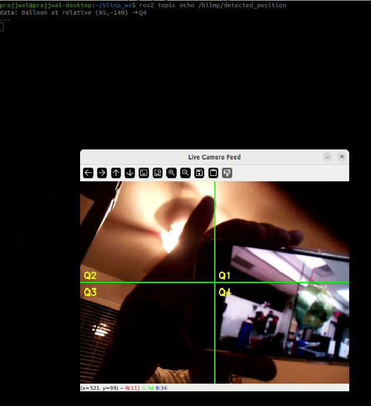
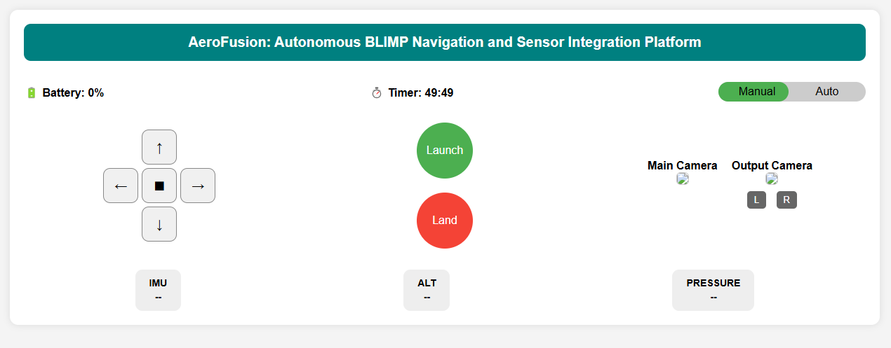

Current Project Status
Team Assignment 4
Since the last milestone, the team has made substantial progress in developing both the sensing and autonomy stack. the primary focus is building a system that can identify and track an olive-colored balloon in real time, navigate toward it using differential drive, and determine success based on proximity to the center of the camera frame.
This work integrates multiple sensing modalities: camera, and IMU alongside autonomous behavior through ROS2 nodes and coordinated control logic.
Sensor Integration and Filtering
The team is currently using three primary sensors:
- Camera (USB webcam) for image acquisition and target detection
- ICM20948 IMU for measuring orientation and motion
The camera provides vision-based input used primarily for high-level object detection and tracking.
Active ROS Topics (place holder)
/image_raw # Camera feed
/blimp/detected_position # YOLO-based balloon detection
/imu/data_raw # IMU (gyro, accel, fused orientation)
/imu/mag # Magnetometer readings
Object Detection and Tracking
The team trained a custom YOLOv5s model to detect olive-colored balloons, which are the objects of interest.
Training details:
- Platform: Roboflow + local training
- Dataset: Collected in variable lighting/backgrounds
- mAP@0.5: ~96%
- Inference time: ~20ms (GPU), <100ms (CPU)
Upon detection, the model calculates the centroid of the balloon and converts it to relative pixel coordinates, using the frame's center as the origin. This enables both quadrant classification (Q1–Q4) and distance estimation.

Figure 1: Real-time detection of the green target balloon using a custom-trained YOLOv5 model with quadrant-based localization.
The team used the object's position relative to the center to command differential drive actions. As the object nears the center, the blimp slows down and halts when it reaches a defined "success zone."
Object Tracking and Success Criteria
The object tracking strategy is based on the distance between the detected object’s centroid and the center of the frame. The logic is as follows:
- YOLO detects the object and computes its (x, y) position.
- The team measured the offset from the image center.
- This offset is used to determine the movement direction via differential drive.
- When the object enters a predefined central "success zone", the task is marked complete and the blimp halts.
This behavior mimics a form of visual servoing, using object position rather than absolute coordinates to navigate.

Figure 2: Directional movement commands are generated based on the detected position of the target balloon within the camera frame.
{kind=link}
Low-Level and High-Level Autonomy
Low-Level Autonomy
Low-level autonomy includes all real-time control and stabilization functions:
- IMU: Estimating attitude (roll, pitch, yaw)
- Sensor Filtering:
- Low-pass filters on accelerometer data to reduce noise
- Complementary filters for fusing orientation data
- PID Control (planned): For servo and throttle regulation.
- Servo Feedback (encoders): Used for velocity and position tracking.
High-Level Autonomy
High-level autonomy focuses on decision-making and planning:
- Object detection with YOLOv5: Identifying the balloon in frame
- Quadrant classification: Mapping position to Q1–Q4 based on pixel coordinates
- Movement control: Commands based on detected quadrant
- Goal logic:
- If object is off-center → adjust orientation and move
- If object is centered → stop servos and flag task as completed
- Fallback logic (planned): Handle scenarios where the object leaves the frame
Conditioning and Filtering of Sensor Data
Effective autonomy depends on reliable sensor input. Here’s how the team will manage each:
Camera (Vision Input)
- Contrast Enhancement: Histogram equalization and HSV color space for better robustness under changing lighting.
- Filtering: Median filtering and Gaussian blurring to suppress noise.
- Region of Interest (ROI): Focus processing on central region to improve performance.
IMU
- Sensor Fusion: Combining gyro, accel, and mag data using complementary filters.
- Filtering: Low-pass filtering for accel and magnetometer data; high-pass to correct gyro drift.
Servos
- PID Controllers (planned): For consistent and smooth motion.
- Encoder Feedback: To adjust velocity in real time.
- Noise Filtering: Reduce jitter in encoder readings via smoothing.
Decision-Making Overview
Sensor data feeds into both short-term (control) and long-term (behavioral) decisions:
Low-Level Decisions
- Set PWM/servo speeds based on position errors
- Adjust throttle for altitude
- Stabilize yaw using IMU orientation
- Apply real-time filters for smoother control
High-Level Decisions
- Use YOLO to detect and localize the balloon
- Estimate relative direction and command movement
- Track proximity to frame center and decide when to stop
- Manage behavioral states: searching → tracking → stop
Updated Sensor Flowchart
graph TD
Camera -->|/image_raw| YOLOv5_Detector
YOLOv5_Detector -->|/blimp/detected_position| QuadrantLogic
IMU -->|/imu/data_raw| Stabilizer
QuadrantLogic --> MotionPlanner
Stabilizer --> MotionPlanner
MotionPlanner --> ActuatorsGUI Update
The current graphical user interface (GUI) is designed using a ROS 2 WebSocket-based architecture to enable real-time monitoring and control of the aerial robot. This approach was selected due to performance limitations observed during early tests—particularly latency and bandwidth issues with direct streaming from the onboard Raspberry Pi using tools like RQT or VNC.
To overcome these constraints, the team developed a lightweight, browser-accessible GUI that interfaces with ROS 2 via rosbridge_server and roslibjs. This setup allows for JSON-based communication over WebSockets, facilitating seamless interaction with ROS topics, services, and messages.
Technologies used:
- HTML/CSS/JavaScript: For layout, styling, and interactivity
- roslibjs: For WebSocket communication with ROS 2
- rosbridge_server: Acts as a middleware bridge translating ROS messages into JSON
Features supported:
- Live video streaming from the onboard camera (via MJPEG)
- Real-time visualization of IMU data and telemetry
- Manual control inputs using buttons or joystick events
- System diagnostics and status monitoring
By offloading the GUI rendering to a browser, onboard compute resources are reserved for mission-critical ROS 2 tasks. This results in a responsive, low-latency interface suitable for remote deployment.

Figure 3: Real-time sensor and control interface for the BLIMP, developed using roslibjs and rosbridge_server over WebSockets.
{kind=link}
📹 Balloon Tracking Demo
Summary
The system is now capable of:
- Detecting and tracking a balloon in real time
- Navigating toward the balloon using differential drive
- Halting autonomously upon reaching the success zone
- Publishing and processing filtered IMU sensor data
Next Steps:
- Fully synchronize GUI with detection and motor control nodes
- Implement PID control for smoother and more stable navigation
- Add fallback mechanisms when the target is lost
- Fine-tune success detection thresholds
- Log and evaluate system performance using rosbag